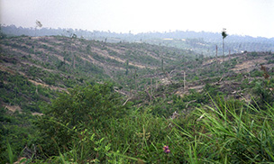

SAVE THE SUMATRAN ELEPHANT!
"Unless deforestation on the island of Sumatra is halted, we could possibly see the Sumatran elephant be restricted to just a few remote populations within our lifetimes."
- Dr. Barney Long
Asian Species Expert

THE FACTS:
The Sumatran elephant is critically endangered and only between 2,400 ad 2,800 remain.
Sumatran elephants feed on a variety of plants and deposit seeds wherever they go, contributing to a healthy forest ecosystem. They also share their lush forest habitat with several other endangered species, such as the Sumatran rhino, tiger, and orangutan, and countless other species that all benefit from an elephant population that thrives in a healthy habitat.
Sumatran elephants matter because they feed on a variety of plants and deposit seeds wherever they go, contributing to a healthy forest ecosystem.

THE THREATS:
- Poaching: Sumatran elephants typically have smaller tusks but they are enough to tempt poachers who kill the animals and sell their tusks on the illegal ivory market. Only male Asian elephants have tusks so every poaching event further skews the sex ratio further constraining breeding rates for the species..
- Deforestation and Habitat Loss: A major breakthrough was achieved in Sumatra with the 2004 declaration of Tesso Nilo National Park, a protected area, which represents a significant step towards the protection of the elephant's habitat. The Tesso Nilo forest is one of the last forest blocks large enough to support a viable population of critically endangered Sumatran elephants and is also home to the critically endangered Sumatran tiger. WWF calls on the government of Indonesia, palm oil companies, members of the pulp and paper industry and conservation organizations, to work together to conserve Sumatran elephants, and their unique habitat. Because Sumatra’s trees are rooted in carbon-rich deep peat soil, the high rate of deforestation is also causing high amounts of carbon to be released into the atmosphere, which contributes to climate change.
- Human-Elephant Conflict: A major breakthrough was achieved in Sumatra with the 2004 declaration of Tesso Nilo National Park, a protected area, which represents a significant step towards the protection of the elephant's habitat. The Tesso Nilo forest is one of the last forest blocks large enough to support a viable population of critically endangered Sumatran elephants and is also home to the critically endangered Sumatran tiger. WWF calls on the government of Indonesia, palm oil companies, members of the pulp and paper industry and conservation organizations, to work together to conserve Sumatran elephants, and their unique habitat. Because Sumatra’s trees are rooted in carbon-rich deep peat soil, the high rate of deforestation is also causing high amounts of carbon to be released into the atmosphere, which contributes to climate change.

WHAT WWF IS DOING:
- Reducing Human-Elephant Conflict: The region around Tesso Nilo in central Sumatra is being cleared so rapidly that elephants often go to farms and commercial plantations in search of food. In 2004, WWF started an Elephant Flying Squad, which is made up of rangers, noise and light-making devices, a truck, and four trained elephants that would drive wild elephants back into the forests if they threatened to enter villages.
WWF recruited trainers and elephants from elephant camps that the Indonesian government maintains. These nine men and four elephants went through intensive training to create bonds to make them an effective team that safely drives back wild elephants. The project proved so effective in reducing losses suffered by local communities and companies that there are now four flying squads in the Riau Province. WWF runs one of them and the others are run by companies operating in the area and by Tesso Nilo National Park.
The squads help bring short-term relief to the intense conflict between people and elephants and to create support for elephant conservation among struggling communities. WWF carries out research on elephants and the nature of their conflicts with humans and works with local communities and companies to develop solutions that ensure that there is space for humans and elephants to coexist.
- Securing Healthy Forests: A major breakthrough was achieved in Sumatra with the 2004 declaration of Tesso Nilo National Park, a protected area, which represents a significant step towards the protection of the elephant's habitat. The Tesso Nilo forest is one of the last forest blocks large enough to support a viable population of critically endangered Sumatran elephants and is also home to the critically endangered Sumatran tiger. WWF calls on the government of Indonesia, palm oil companies, members of the pulp and paper industry and conservation organizations, to work together to conserve Sumatran elephants, and their unique habitat. Because Sumatra’s trees are rooted in carbon-rich deep peat soil, the high rate of deforestation is also causing high amounts of carbon to be released into the atmosphere, which contributes to climate change.
- Halting Poaching and Stopping Trade: In response to high incidents of elephant and tiger poaching in central Sumatra, WWF and its local partners have coordinated wildlife patrol units that conduct antipoaching patrols, confiscate snares and other means of trapping animals, educate local people on the laws in place concerning poaching, and help authorities apprehend criminals. The evidence collected by wildlife patrol units has helped bring known poachers to court. In many Asian countries, WWF works with TRAFFIC, the wildlife trade monitoring network, to reduce the threat that illegal and illicit domestic ivory markets pose to wild elephants.

Source: Word Wild Life Org: Critically Endangered Sumatran Elephant